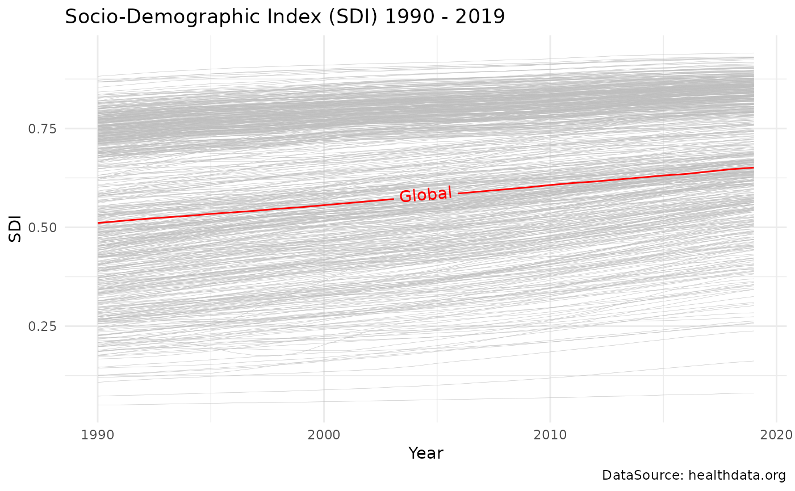

Case Study: SDI 1990 - 2019
Source:vignettes/articles/Case-Study-sdi90_19.Rmd
Case-Study-sdi90_19.Rmd
data(sdi90_19)
head(sdi90_19)
#> # A tibble: 6 × 3
#> location year value
#> <chr> <dbl> <dbl>
#> 1 Global 1990 0.511
#> 2 Global 1991 0.516
#> 3 Global 1992 0.521
#> 4 Global 1993 0.525
#> 5 Global 1994 0.529
#> 6 Global 1995 0.534
sdi_avg |>
ggplot(aes(x = year, sdi_avg, group = location)) +
geom_line(
show.legend = F,
color = "grey",
linewidth = 0.1
) +
geomtextpath::geom_textpath(
data = sdi_avg |>
filter(location == "Global"),
aes(label = location),
color = "red"
) +
ggtitle("Socio-Demographic Index (SDI) 1990 - 2019") +
labs(
caption = "DataSource: healthdata.org",
x = "Year", y = "SDI"
)